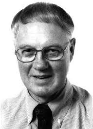

install.packages(c("lavaan","semTools"), dependencies = TRUE)Stuctural Equation Modeling
Workshop AgroStat 2024
Introduction
- This AGROSTAT2024 pre-conference workshop will held on 3 September 2024 in Bragança. All its material is available at https://galharret.github.io/SEM_AGROSTAT2024/
What is a structural equation model?
Structural equation modeling generalizes linear regression models.
These models have been introduced into social and psychological studies in the 70’s.
SEM can be used to produce regression models between latent variables.
The two approaches
\(\leadsto\) In this workshop we will focus on the covariance analysis with the most theoritical and mathematical background.

Some reference books
Contents of the workshop
SEM without a measurement model: Path modeling
SEM with a measurement model: Factor Analysis and structural relation.
SEM Terminology and Notations
In SEM, two categories of variables are involved:
Exogenous variable (denoted by \(\xi\)) who are deterministic. These values are independent from the values of the other variables of the model. Normal regression models assume that the predictors are exogenous.
Endogenous variable (denoted by \(\eta\)) who are stochastic and who are correlated with the error of the model. These values are depending of the values of other factors involved in the model.
In the first example \(X_1\) is exogenous and \(X_2,X_3\) are endogenous.
Software
Lavaan is a the most popular package on R for latent variable modelling.
The official reference of lavaan: Rosseel (2012)
Its website : lavaan.org
For installing lavaan and SemTools: